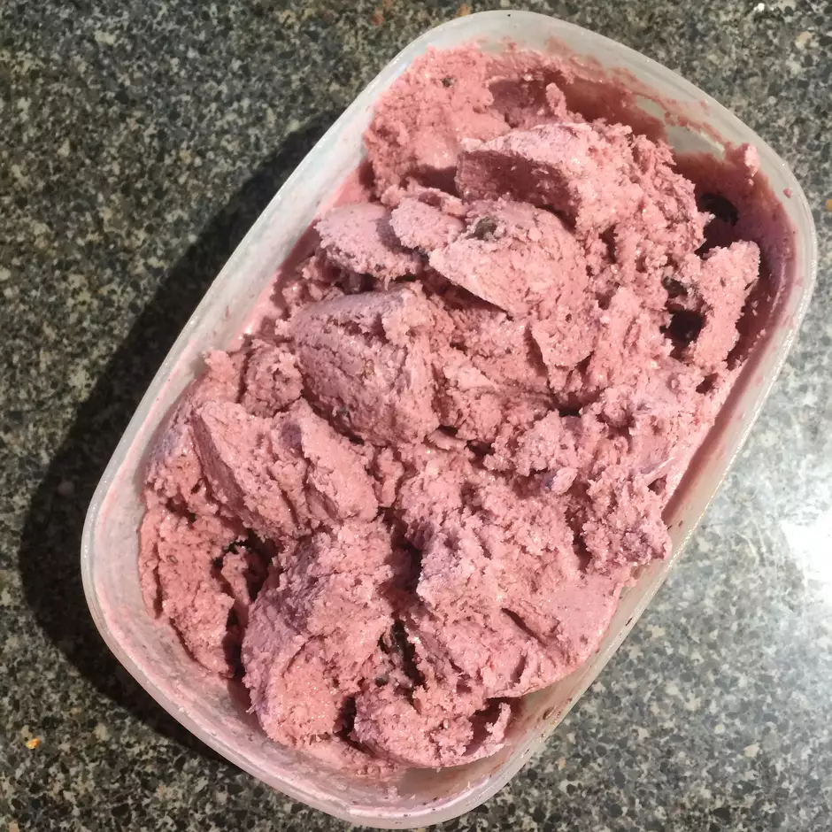

Cherry Ice Cream

Description
Delicious cherry ice cream! It's a fabulous, dark shade of magenta and has a tart flavor that kids (and adults) will love. I have been experimenting with tart cherry juice, and I love this recipe!
Ingredients
- ¼ cup cherry juice concentrate
- ½ cup fat free milk
- 1 cup vanilla low-fat yogurt
- 1 cup heavy cream
- ½ cup white sugar
- 1 pinch salt
- 1 cup frozen dark sweet cherries
- 2 teaspoons almond extract
Steps
- Place the cherry juice, milk, yogurt, and heavy cream into the bowl of a blender. Add the sugar, salt, cherries, and almond extract. Puree until only small bits of the cherries remain.
- Pour into a 1 1/2 quart ice cream maker and freeze according to manufacturer's directions.